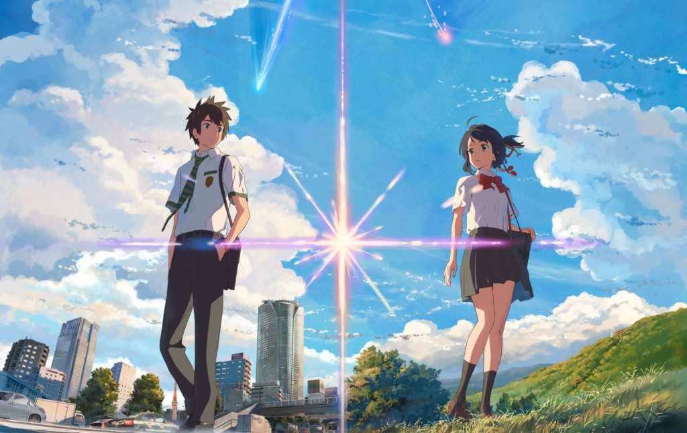
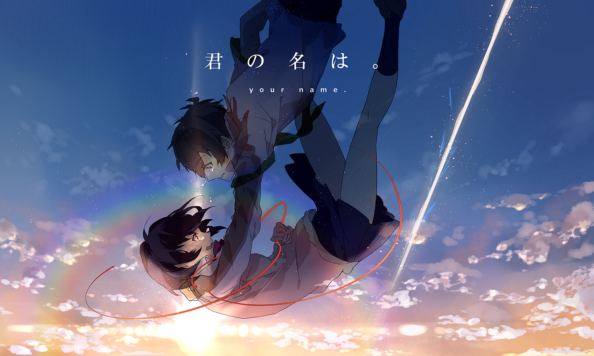

Kimi no nawa (Your name)
Your Name (Japanese: 君の名は。, Hepburn: Kimi no Na wa) is a 2016 Japanese animated romantic fantasy film written and directed by Makoto Shinkai, produced by CoMix Wave Films and distributed by Toho. It depicts the story of high school students Taki Tachibana and Mitsuha Miyamizu, who suddenly begin to swap bodies despite having never met, unleashing chaos on each other's lives. The film was inspired by the frequency of natural disasters in Japan.
 